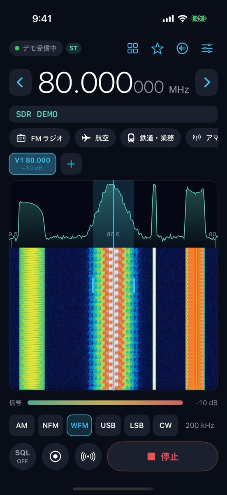
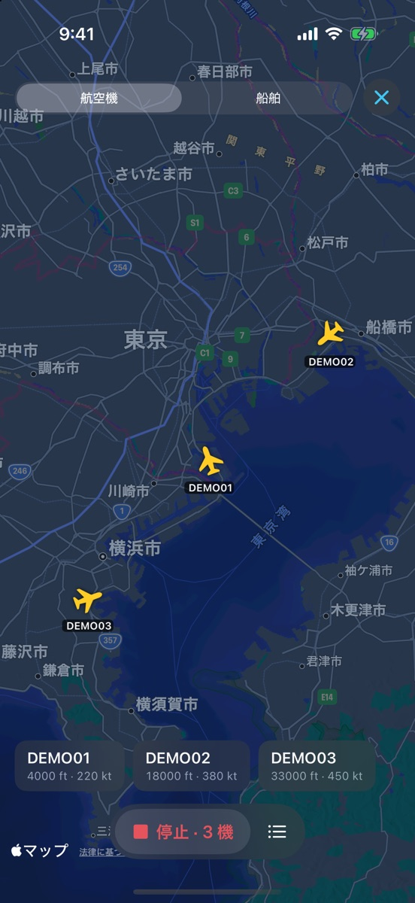
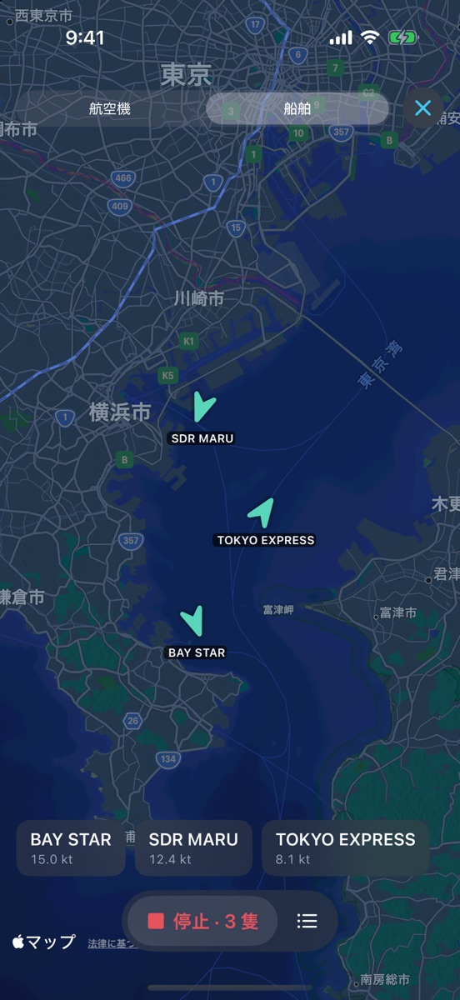
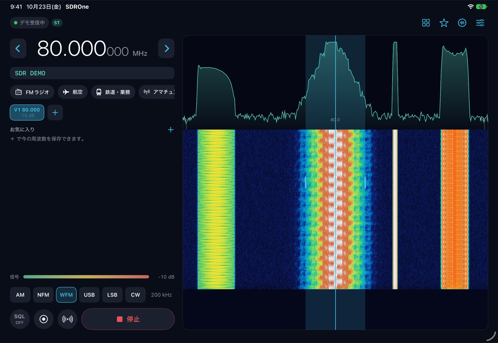

rtl_tcp につないで、FM・航空無線・アマチュア無線などを聴ける、iPhone と iPad のアプリです。

家で動いている受信機に Wi-Fi でつないで、どこからでも聴けます。
Features
ウォーターフォールをタップするだけで、その周波数へ。
FM 放送はステレオで、局名も表示します。
ボタンひとつで録音。信号を探して自動で巡回します。
航空機（ADS-B）と船舶（AIS）を表示。FT8 の解読にも対応。



このアプリは受信専用です。電波法により、特定の相手に向けた通信の内容を、他人に漏らしたり利用したりすることは禁じられています。
FAQ
つなげません。PC や Raspberry Pi で rtl_tcp を動かして、そこにネットワーク経由でつなぎます。
試せます。「デモ信号」で、操作を一通り確認できます。
聴けません。アナログ方式だけを扱っています。